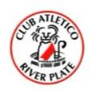

La historia de River Plate comienza el 25 de mayo de 1901, cuando se funda el club tras la fusión de dos equipos del barrio de La Boca, Santa Rosa y La Rosales. A lo largo de los años, River Plate se ha convertido en uno de los clubes más exitosos y reconocidos de Argentina y Sudamérica, destacándose en competiciones nacionales e internacionales. Su rica historia incluye numerosos títulos y una gran rivalidad con Boca Juniors, su eterno adversario.
| EVOLUCION DE LOS ESCUDOS DE RIVER PLATE | ||||||||||||
| EN QUE AÑO SE USO | 1918 | 1928 | 1931 | 1933 | 1941 | 1947 | 1969 | 1985 | 1993 | 1998 | 2006 | 2022 ACTUAL |
| IMG DEL ESCUDO |  |